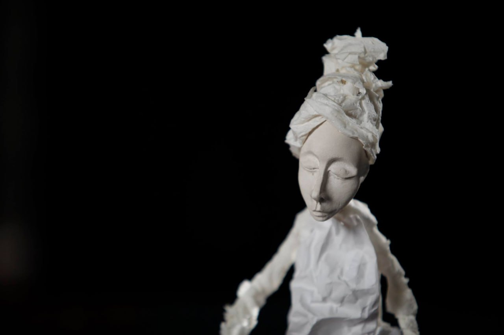

First feedback
October 5, 2026
Translated from Russian.
Keep going like this and you're done for. I'm serious: if you don't do something, if you don't change – you're done for.
I'm Andrei, 13 years in IT, burned out. I built Dok to get myself out of bed.
Natalya is a psychologist who has worked in IT for 23 years. She burned out too. She pulls people out of depression and is growing her own anti-burnout project. She goes to them from the heart, because she loves them, and they feel it.
Natalya knows the situation from the inside: AI and layoffs mean pressure on team leads and overtime. Some people are on antidepressants.
I thought about myself: it's hard to admit. I tell myself: "You're strong, you'll pull through." Opening up is hard. Natalya is right.
Opening up to Dok is easier. And if things don't get better, he'll suggest a real specialist himself – Natalya is one of them. That's what the pilot rests on.
Katerina is an artist with her head in the clouds. She did industrial design until she burned out. In her spare time she makes dolls – tender, fragile.
We swapped websites. About mine she said: "a little coffin", "kind of depressing" – and pointed me to Goethe's colour wheel. I asked to see the dolls.
She sent a few photos. They're very beautiful. There are no links to them. Nobody sees them.
I'll show one.

Natalya has been using Dok since May. I talked to her.
She says Dok has become more human than three months ago. Pushy, doesn't just agree.
And the main point: Dok flattered. The moment a person said something in a new way, Dok praised them to the skies – "you've done this for the first time in your whole life" – and it annoyed Natalya.
That's the first serious change in Dok's personality in three months: instead of praise, he now asks how the person is feeling, or finds another way to let them open up.
Eyes burning, running on motivation, building, and thinking to myself: the main thing is that Natalya is happy. She's the pilot's first user.
Sanya walks into the kitchen. October 3, 6:30 in the morning.
Sanya likes climbing trees and breaking things, so he does demolition work, says he understands life and loves God. He came from Crimea to St. Petersburg. In Crimea there's less work, and petrol is 300 rubles.
He asks: did you even sleep?
No, I say. I show him the screens.
– Oh, so there's the right stuff written here, it's all already written here. And when did you last go outside?
Sanya circles like a boxer in the ring, hitting me with his questions.
– And how much does it cost? Twenty grand? Well, I don't need it yet. Well, sometimes you do need it, but right now I don't. Let me ask you a question: what will you do if nobody buys from you?
He explains how he finds clients on Avito.
– Do you talk to people? You don't, and you've bet everything on this. Keep going like this and you're done for. I'm serious: if you don't do something, if you don't change – you're done for.
I didn't argue. We'll see.
Natalya – @NatalyaDoktorova, Katerina – @morraname.